항공전자정비기능사 (2002-04-07 기출문제)
1과목: 임의 구분
1. 다음 그림은 널 래퍼런스(null reference)형 글라이드 슬로프 공중선의 지향성을 나타낸 것이다. ⓐ 가 뜻하는 성분을 옳게 설명한 것은?
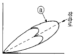
- 측대파 - 150[Hz] + 90[Hz]
- 반송파 + 150[Hz] + 90[Hz]
- 측대파 + 150[Hz] - 90[Hz]
- 측대파 + 150[Hz] + 90[Hz]
(정답률: 알수없음)

2. 항공기 기내 방송에는 우선 순위가 있다. 다음 중 우선 순위가 제일 낮은 것은?
- 조종사의 기내 방송
- 부조종사의 기내 방송
- 객실 승무원의 기내 방송
- 승객을 위한 음악 방송
(정답률: 알수없음)
3. 디지탈 비행자료 기록장치의 자기테이프(DFDR)는 몇 시간 자료를 기록할 수 있는가?
- 25시간
- 15시간
- 5시간
- 1시간
(정답률: 알수없음)
4. 비행자료 기록장치(F.D.R : flight data recorder)에 기록되는 내용이 아닌 것은?
- 대기속도(對氣速度)
- 고도(altitude)
- 기수방위(機首方位)
- 승무원 간의 기내전화(interphone) 대화 내용
(정답률: 알수없음)
5. 자동방향 탐지기(ADF)에 사용되는 주파수대(Frequency -Band)는?
- 중파대
- 단파대
- 초단파대
- 극초단파대
(정답률: 알수없음)
6. 중력의 방향에 대해 항상 평형 상태를 유지하는 gyro를 사용하는 장치는?
- 거리 측정 장비(DME)
- 항공 교통 관제(ATC)
- 관성 항법 장치(INS)
- 기상 레이다
(정답률: 알수없음)
7. 자동방향 탐지기(ADF)의 계기 지침은 무엇을 지시하는 가?
- 항공기 진행 방향
- 항공기 Heading 방향
- 자북(magnetic north)방향
- 선택된 무선국 방향
(정답률: 알수없음)
8. 로컬라이저(Localizer)에 사용되는 주파수 범위는?
- 2[MHz] ∼ 29.999[MHz]
- 108[MHz] ∼ 112[MHz]
- 329[MHz] ∼ 335[MHz]
- C 또는 X band
(정답률: 알수없음)
9. 변조 주파수 및 Keying 부호에 따라 식별되는 Marker 중 1300Hz의 Dot 및 Dash 교대 연속음이 들리는 곳은?
- 내측 마아커비이콘(Inner marker beacon)
- 중앙 마아커비이콘(Middle marker beacon)
- 외측 마아커비이콘(Outer marker beacon)
- 중앙 마아커비이콘과 내측 마아카 비이콘 사이를 통과하는 곳
(정답률: 알수없음)
10. 로칼라이저(localizer)에 대한 설명 중 옳은 것은?
- 코스의 중심은 반송파 패턴(pattern)만 있으므로 90[㎐]와 150[㎐]의 변조도는 같다.
- 코스를 향하여 좌의 영역에서는 90[㎐]의 반송파와 측파대의 세력은 역상이다.
- 코스를 향하여 우의 영역에서는 150[㎐]의 반송파와 측파대의 세력은 역상이다.
- 활주로에 대한 적절한 진입각을 나타내는 계기 착륙장치이다.
(정답률: 알수없음)
11. 요 댐퍼 시스템(yaw damper system)의 설명으로 옳지 않은 것은?
- 항공기의 비행고도를 급속하게 낮추는 조작이다.
- 더치롤(dutch roll)을 방지할 목적으로 이용된다.
- 각 가속도를 탐지하여 전기적인 신호로 바꾼다.
- 방향타를 적절하게 제어하는 것이다.
(정답률: 알수없음)
12. 수평안전의 위치를 자동제어케 하는 요소는 다음중 하나의 각도와 이에 따른 항공기 속도의 함수로써 결정된다. 어느 것인가?
- 보조익
- 승강타
- 방향타
- 모두맞다.
(정답률: 알수없음)
13. SURFACE SERVO SYSTEM에 신호를 보내주는 CHANNEL은?
- ADi
- AUTO PiLOT
- FLiGHT DiRECTOR
- FMA
(정답률: 알수없음)
14. 대형 항공기의 VHF SYSTEM에 대한 설명 중 옳지 않은 것은?
- LOOP 안테나 사용
- 송신출력 20 - 25W
- 수신 S/N 비 6㏈ 이상
- 2 OUT OF 5 TUNNiNG
(정답률: 알수없음)
15. 항공 교통 관제(ATC) SYSTEM 은 몇차 식별 레이다에 의해 물음에 대한 답을 하는가?
- 1
- 2
- 3
- 1차와 2차 통신
(정답률: 알수없음)
16. 계수형 비행 자료 기록기의 작동 개시점은?
- 엔진 구동시
- 대지속도 80KTS 이상
- 비행기 이륙
- 고도 2,500FT 이상
(정답률: 알수없음)
17. 거리측정 장치의 주파수는 어느 곳을 선정하여 사용하는 가?
- 초단파 전방향 무선 표지국
- 거리측정 장치용 조종판
- 항공 교통 관제소
- 저고도 전파 고도계
(정답률: 알수없음)
18. 지상에서 발사하는 190㎑ - 1750㎑대의 무선신호를 수신 하는 장비명은?
- 자동 방향 탐지기
- 초단파 전방향 수신기
- 항공교통 관제 응답장치
- 거리측정 질문장치
(정답률: 알수없음)
19. 정밀 진입 레이다를 약어로 바르게 나타낸 것은?
- AAR
- PAR
- QAR
- KAR
(정답률: 알수없음)
20. 고도 경고등이 번쩍이며, 음향이 나타날 때는 선택된 고도를 기준으로 하여 다음 중 어느때 인가?
- 접근
- 유지
- 이탈
- 모두맞다.
(정답률: 알수없음)
2과목: 임의 구분
21. CLUTCHED 기수 자방위(MAGNETiC HEADiNG)를 쓰는 곳은?
- 비행 기록기
- POLL 컴퓨터
- RMI(RADiO MAGNETiC iND)
- HSI(HORIZONTAL SiTUATiON iND)
(정답률: 알수없음)
22. 자동 비행 조정 장치들의 컴퓨터들은 다음 중 어느 신호에 의하여 이득 조절되는가?
- 초단파 전방향 무선
- 전파고도계
- 로칼 라이저
- 글라이드 슬로우프
(정답률: 알수없음)
23. 전리층의 종류 중 가장 낮은 고도에 존재하는 전리층은?
- D층
- E층
- F1층
- F2층
(정답률: 알수없음)
24. 다음 그림은 ILS 상태에서의 AHI 및 CDI의 지시 상태이다 이 상태에 대한 옳은 설명은?
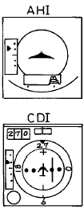
- 항공기는 글라이드슬로우프 중심선의 아래, 로컬라이저 중심선의 좌측에 위치해 있다.
- 항공기는 글라이드슬로우프 중심선의 위에, 로컬라이저 중심선의 좌측에 위치해 있다.
- 항공기는 글라이드슬로우프 중심선의 위에, 로컬라이저 중심선의 우측에 위치해 있다.
- 항공기는 글라이드슬로우프 중심선의 아래, 로컬라이저 중심선의 우측에 위치해 있다.
(정답률: 알수없음)
25. 조종실 음성 기록장치(CVR)의 설명 중 옳은 것은?
- 정상비행에서 종료되었을 때라도 승무원은 녹음을 지울 수 없다.
- 비행중 오동작으로 녹음되었을 경우는 테이프의 용량이 부족하기 때문에 녹음을 지울 수 있다.
- 비행이 시작되면서 부터 끝날 때 까지 전부 녹음이 되어 있다.
- 비행이 종료되었을 때는 이상이 없을 시 승무원은 녹음을 지울 수 있다.
(정답률: 알수없음)
26. 100[V], 500[W]의 전열기를 80[V]로 사용하였을 때의 소비전력은 얼마인가?
- 240[W]
- 320[W]
- 400[W]
- 480[W]
(정답률: 알수없음)
27. 저항 5[Ω ]과 6[Ω ]의 병렬회로에 300[V]의 전압을 가할 때, 5[Ω ]에 흐르는 전류[A]는 ?
- 50
- 60
- 70
- 80
(정답률: 알수없음)
28. 도체와 도체가 접촉된 부분에 전류가 흐르게 되면, 이 부분에 전압강하가 생기고 열이 난다. 이 부분의 저항을 무엇이라 하는가?
- 절연 저항
- 접지 저항
- 접촉 저항
- 고유 저항
(정답률: 알수없음)
29. 어떤 코일에 직류 10[A]가 흐를 때 축적된 에너지가 50[J]이라면, 이 코일의 자기 인덕턴스는 몇[H]인가?
- 0.5
- 1.0
- 1.5
- 2.0
(정답률: 알수없음)
30. 환상 솔레노이드에서 코일의 권수를 2배로 하면, 자기 인덕턴스의 값은 몇배로 되는가?
- 1/2
- 2
- 1/4
- 4
(정답률: 알수없음)
31. 9[V]의 전지를 사용하여 100[㎃]의 전류를 10분 동안 흘렸다면 전지에서 나온 전기량은 몇 [C]인가?
- 60[C]
- 120[C]
- 1200[C]
- 6000[C]
(정답률: 알수없음)
32. 똑같은 용량을 갖는 2개의 콘덴서가 있다. 이것을 직렬로 연결하면 5[㎌]이고 병렬 접속하면 20[㎌] 일 때, 이 콘덴서 1개의 정전용량은 얼마인가?
- 5[㎌]
- 2.5[㎌]
- 1.25[㎌]
- 10[㎌]
(정답률: 알수없음)
33. 평형 3상 회로의 한 상에서 소비되는 전력이 P라면 3상 회로 전체에서 소비되는 전력은?
- P
- √3P
- 2P
- 3P
(정답률: 알수없음)
34. R-C 직렬 회로에서 R = 500[KΩ ], C = 2 [μ F]일 때 시상수는?
- 1[sec]
- 2[sec]
- 3[sec]
- 4[sec]
(정답률: 알수없음)
35. 내부저항이 100[Ω ]이고 최대눈금 50[㎷]인 직류전압계에 1.2[㏁]의 배율기를 접속할 때, 측정할 수 있는 전압은 약 얼마인가?
- 200[V]
- 400[V]
- 600[V]
- 800[V]
(정답률: 알수없음)
36. 정류기의 그림에서 어느 점에 교류입력을 연결하는가?
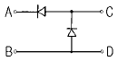
- A-B점
- C-D점
- A-C점
- B-D점
(정답률: 알수없음)
37. 합금 접합형 트랜지스터의 용도는?
- 정류용
- 검파용
- 고주파용
- 저주파 전력용
(정답률: 알수없음)
38. 터널다이오드의 특성으로 옳지 않은 것은?
- 역바이어스 상태에서는 훌륭한 도체이다.
- 적은 순바이어스 상태에서 저항은 5Ω 정도로 대단히 작다.
- 피크전류 ＩP의 상태가 지나면 dV/dI＜ 0 을 나타낸다.
- 전류가 최대이며, dI/dV = ∞로 되는 동작점의 전류를 발리(Valley)전류라 한다.
(정답률: 알수없음)
39. 그림과 같은 회로에서 100V의 교류전압을 전파배전압정류 할 때 최대정류전압은 약 몇 V 인가?
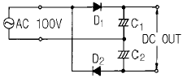
- 140
- 160
- 180
- 280
(정답률: 알수없음)
40. VBE(sat)= 0.8V, β=100, VCE(sat)=0.2V일 때 포화상태로 유지되는 RL은 최소 몇 kΩ 인가?
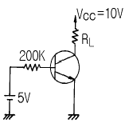
- 2.33
- 4.66
- 9.32
- 18.64
(정답률: 알수없음)
3과목: 임의 구분
41. 그림과 같은 회로는?
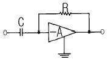
- 톱니파 발생회로
- 적분회로
- 정현파 발생회로
- 미분회로
(정답률: 알수없음)
42. 그림과 같은 논리기호의 논리식은?
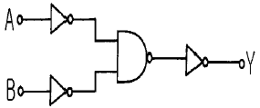
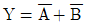
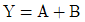
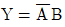
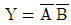
(정답률: 알수없음)
43. 어떤 증폭기의 입력전압을 5mV 변화시켰더니 출력전압이 5V 변화하였다. 이 증폭기의 이득은 몇 dB 인가?
- 20
- 40
- 60
- 80
(정답률: 알수없음)
44. 쌍안정 멀티바이브레이터에는 스위칭 속도를 높이기 위한 콘덴서가 몇 개 필요한가?
- 2
- 4
- 6
- 8
(정답률: 알수없음)
45. 집적회로(ＩC)의 특징으로 적합하지 않은 것은?
- 경제적이며 제작이 편리하다.
- 소형이며 성능이 우수하다.
- 높은 신뢰도를 얻을 수 있다.
- 고주파, 대전력용으로 적합하다.
(정답률: 알수없음)
46. 그림과 같은 회로는 어떤 궤환회로인가?
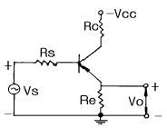
- 직렬전압 궤환회로
- 직렬전류 궤환회로
- 병렬전압 궤환회로
- 병렬전류 궤환회로
(정답률: 알수없음)
47. 발진주파수 범위가 가장 넓은 것은?
- LC반결합발진기
- RC발진기
- 수정발진기
- 음차발진기
(정답률: 알수없음)
48. 펄스파형의 상승시간(rise time)은 펄스 높이가 몇 %에서 몇 %까지 상승하는데 걸리는 시간인가?
- 0∼90
- 10∼100
- 10∼90
- 0∼100
(정답률: 알수없음)
49. 진공관 전압계로 고주파 전압 측정시 생기는 일반적 오차가 아닌 것은?
- 전자주행시간 오차
- 입력용량 오차
- 공진 오차
- 표피 오차
(정답률: 알수없음)
50. 오실로스코프(Oscilloscope)의 음극선관(Cathode RayTube)의 주요 부분이 아닌 것은?
- 전자총
- 편향판
- 형광막
- 발진기
(정답률: 알수없음)
51. 전류계로 사용할 수 없는 계기는?
- 열전형
- 유도형
- 전류력계형
- 정전형
(정답률: 알수없음)
52. 다른 측정법에 비해 전기 계측이 갖고 있는 특징이 아닌것은?
- 측정의 정도와 안정도가 높다.
- 측정할 때 시간 지연은 많으나 변동이 급격한 양도 연속 측정이 가능하다.
- 측정하려는 양의 기록이나 적산이 쉽다.
- 원격 측정이 가능하며, 측정의 집중 관리가 쉽다.
(정답률: 알수없음)
53. 다음 그림에서 R의 값은?
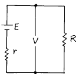
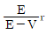
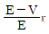
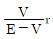
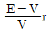
(정답률: 알수없음)
54. 안테나의 실효 저항은 희망주파수에서 공진시킨 상태에서 측정해야 한다. 실효 저항 측정법이 아닌 것은?
- 저항 삽입법
- 작도법(Pauli의 방법)
- coil 삽입법
- 치환법
(정답률: 알수없음)
55. 비트법을 이용한 고주파 주파수계는?
- 레헤르선 파장계
- 그리드 딥 메터
- 헤테로다인 주파수계
- 흡수형 파장계
(정답률: 알수없음)
56. 계수형 주파수계로 1분 동안 반복 회수가 2160회 였다면 피측정 주파수는 몇 [Hz]인가?
- 18
- 36
- 360
- 2160
(정답률: 알수없음)
57. 절연물의 유전체 손실각을 측정하는데 쓰이는 브리지는?
- 맥스웰 브리지(Maxwell bridge)
- 셰링 브리지(Schering bridge)
- 하트숀 브리지(Hartshorn bridge)
- 헤이 브리지(Hay bridge)
(정답률: 알수없음)
58. 안정된 고주파 발진기로 적합한 것은?
- 비트 발진기
- 수정 발진기
- 음차 발진기
- CR 발진기
(정답률: 알수없음)
59. 고주파 전력을 측정하는 방법 중 콘덴서를 사용하여 부하 전력의 전압 및 전류에 비례하는 양을 구하고, 열전쌍의 제곱 특성을 이용하여 부하 전력에 비례하는 직류 전류를 가동 코일형 계기로 측정하도록 한 전력계는?
- C-C형 전력계
- C-M형 전력계
- 볼로미터 전력계
- 의사 부하법
(정답률: 알수없음)
60. 디지털 계측 방식 중 디지털 계수에 의한 측정 장치의 구성이 아닌 것은?
- A/D 변환기
- 파형 정형 회로
- 게이트
- 계수기
(정답률: 알수없음)